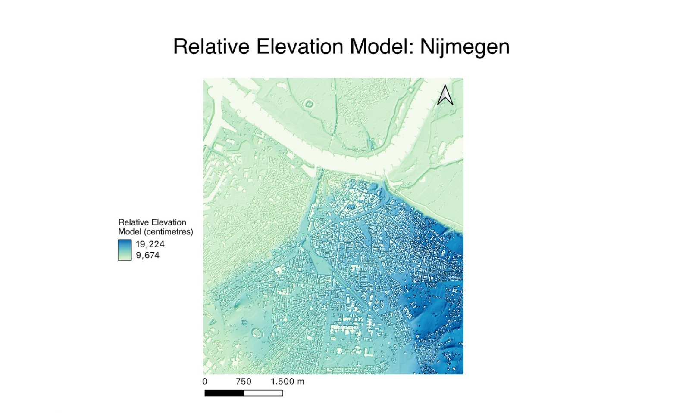

Relative Elevation Model
 A Relative Elevation Model (REM) in GIS represents land elevations relative to a local reference, such as nearby water bodies, rather than absolute elevations above sea level. REMs are crucial for highlighting geomorphological features like floodplains and river terraces. They are widely used in flood risk assessment, environmental management, and agricultural planning. While REMs are typically used to monitor wild rivers they can still be useful in the Netherlands where most of the rivers are relatively controlled.
From analysing this map, one can see that most of the area immediately surrounding the river is very flat – making this area potentially vulnerable to flooding. Indeed, the last big flood in Nijmegen was in 1995 and since then the city has put in numerous efforts to make the city more resistant to flooding - including moving the main dike next to the city to ‘make room for the river’ (https://www.environmentandsociety.org/arcadia/metamorphosis-waterway-city-nijmegen-embraces-river-waal).